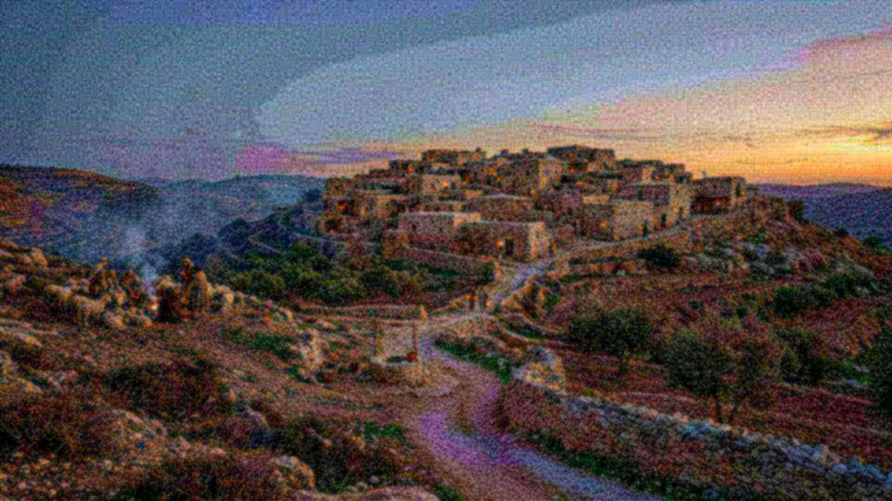

Salle 24 · Aile V — Les Prophéties
Le Messie : plus de trente détails
Une convergence que personne n’aurait planifiée.
Il a été transpercé à cause de nos transgressions.Isaïe 53:5
Le propos
Lieu de naissance, lignée, trahison pour trente pièces d’argent, vêtements tirés au sort, aucun os brisé, tombe d’un riche : les détails annoncés se comptent par dizaines, sur des siècles et plusieurs auteurs. Le rouleau d’Isaïe de Qumrân en porte le texte, copié avant le Ier siècle.
AccomplieLa prophétie
Le Messie : plus de trente détails annoncés
Genèse 22:18 ; 49:10 ; 2 Samuel 7:12-16 ; Michée 5:2 ; Isaïe 9:1, 2 ; 53 ; Zacharie 9:9 ; 11:12, 13 ; Psaumes 16:10 ; 22:18 ; 34:20 ; 69:21
Ce qui est annoncé
- Descendant d’Abraham et de David.Genèse 22:18 ; 2 Samuel 7:12-16
- Naissance à Bethléhem.Michée 5:2
- Ministère en Galilée, sur les rives du Jourdain et de la mer.Isaïe 9:1, 2
- Entrée à Jérusalem monté sur un ânon.Zacharie 9:9
- Trahi pour trente pièces d’argent, prix jeté dans la maison de Jéhovah.Zacharie 11:12, 13
- Rejeté, battu, silencieux devant ses accusateurs.Isaïe 53:3-7
- Compté parmi les transgresseurs, il porte le péché de beaucoup.Isaïe 53:12
- Ses vêtements partagés, tirés au sort.Psaume 22:18
- Du vinaigre lui est donné à boire.Psaume 69:21
- Aucun de ses os n’est brisé.Psaume 34:20
- Mis dans la tombe d’un homme riche.Isaïe 53:9
- Ressuscité, il ne reste pas dans la tombe.Psaume 16:10
Ce qui s’est passé
Les Évangiles rapportent chacun de ces points, à commencer par la naissance à Bethléhem et l’entrée sur un ânon. L’inscription de Ponce Pilate et l’ossuaire de Caïphe apportent un contexte matériel au récit. Le rouleau d’Isaïe de Qumrân contient le chapitre 53 des siècles avant le Ier siècle.
Nuance honnête : Le site ne prétend pas que ces détails soient une démonstration formelle : il constate une convergence rare, y compris sur des points qu’un rédacteur n’aurait pas choisis.
Pièces à conviction

Grand rouleau d’Isaïe (1QIsaᵃ)
Le plus ancien manuscrit complet connu du livre d’Isaïe, retrouvé à Qumrân : il contient notamment le texte du chapitre 53, écrit des siècles avant le Ier siècle.
- Conservation
- Israel Museum, Sanctuaire du Livre
- Inventaire
- 1QIsaᵃ
- Datation
- ≈ IIᵉ s. av. n. è.
- Vérifier
- catalogue du musée

Inscription de Ponce Pilate
Bloc de calcaire portant le nom de Ponce Pilate comme préfet de Judée, retrouvé à Césarée maritime en 1961 : un personnage des Évangiles confirmé par la pierre.
- Conservation
- Israel Museum
- Inventaire
- AE 1963, 104
- Datation
- Ier s. de n. è.
- Vérifier
- catalogue du musée
Objections honnêtes
Mais certains disent…
La science n’a-t-elle pas rendu Dieu inutile ?
La science décrit comment les choses fonctionnent ; elle ne dit pas pourquoi il y a quelque chose plutôt que rien. Un astronome qui mesure la composition d’une étoile ne prétend pas expliquer pourquoi les lois de la physique existent. Les deux questions sont différentes, et la seconde reste ouverte.
Le « réglage fin » n’est-il pas un argument trompeur ?
L’argument a des limites, et le site les expose : certaines marges sont plus larges qu’on ne le dit souvent, des prépublications récentes contestent des estimations classiques, et le multivers est une réponse possible — non observable, et qui doit elle-même être réglée. Ce qui reste solide, c’est le fait mesuré : les valeurs sont ce qu’elles sont, et une vie exigeante en dépend.
Pourquoi tant de souffrance si un Créateur bienveillant existe ?
C’est l’objection la plus sérieuse, et le site ne la minimise pas. La Bible ne présente pas la souffrance comme voulue par Dieu : elle l’attribue à la rébellion, au mauvais usage de la liberté et à un adversaire. Elle annonce aussi sa fin (Révélation 21:4 ; Isaïe 33:24). Une réponse de ce type demande une confiance ; elle ne se décrète pas.
Les prophéties n’ont-elles pas été écrites après les événements ?
C’est une objection légitime, et le site y répond par les manuscrits : les rouleaux de Qumrân datent d’avant le Ier siècle pour Isaïe et d’avant la fin du IIᵉ siècle av. n. è. pour Daniel. Cela prouve l’ancienneté des copies, pas nécessairement la date de composition : la critique universitaire situe souvent Daniel au IIᵉ siècle. Le site affiche ce désaccord au lieu de l’éviter.